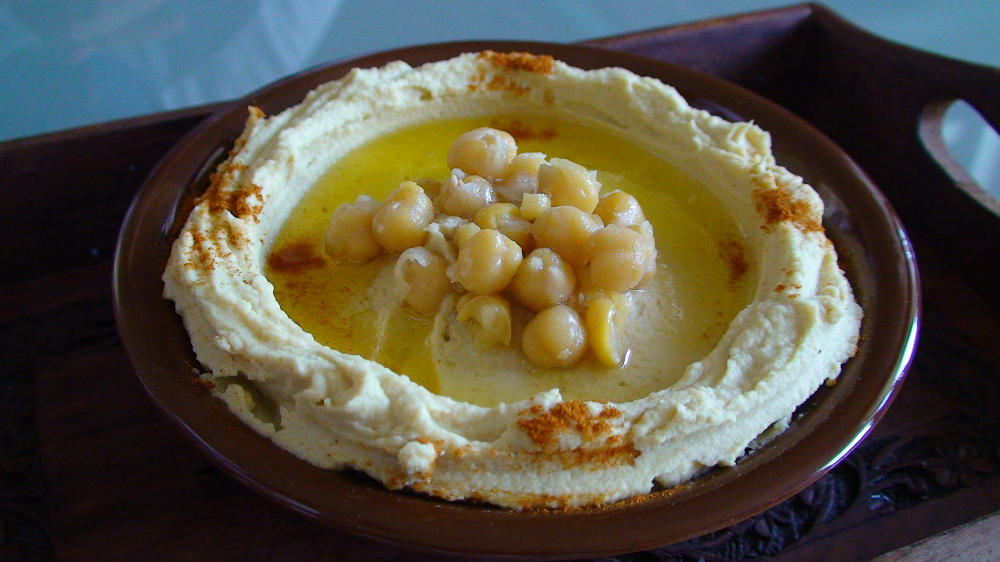

Hummus Recipe
Hummus Recipe

Description
Hummus is a Middle Eastern dip, spread, or savory dish made from cooked and mashed chickpeas blended with tahini, lemon juice, and garlic. This recipe also includes the addition of olive oil.
Ingredients
- 1 1/4 cup dried chickpeas
- 1 tspn baking soda
- 6 1/2 cup water
- 1 cup + 2 tbsp tahini paste
- 4 tbsp lemon juice
- 4 cloves garlic
- 6 1/2 tbsp ice water
- salt
Steps
- Soak dried garbanzo beans overnight or for 8 hours in a pot of water, making sure the water level is above the garbanzo bean level by 2-4 inches depending on the amount of beans.
- Drain water and add water till water level is 2 inches above garbanzo beans and add baking soda.
- Bring to boil and let simmer on medium-low for 1 hour.
- After 1 hour, keep simmering beans and peel garlic.
- Add garlic and lemon juice into a food processor or blender and pulse till garlic is roughly minced.
- Let the garlic and lemon juice mixture sit for 10 minutes.
- After 10 minutes, drain the garbanzo beans and keep 1/4 cup of the bean water, optionally removing the bean skins.
- Blend the garbanzo beans with the garlic and lemon mixture, adding bean water to help blend.
- After fully incorporated, add the rest of the ingredients and blend till smooth.